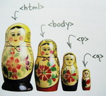
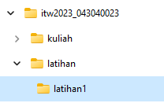
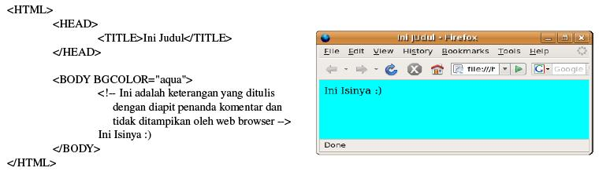
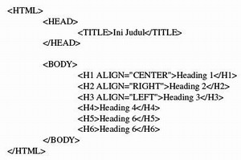
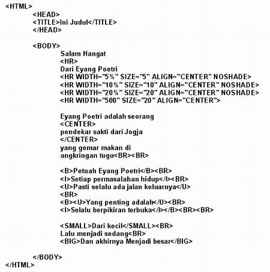
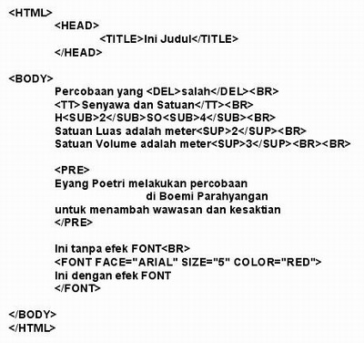
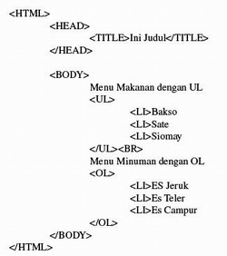
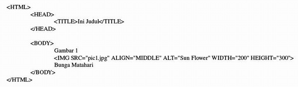
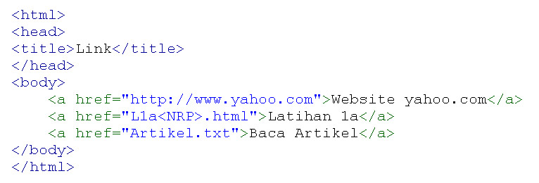

|
Modul Latihan 1 - HTML Dasar
|
What is HTML???
HTML adalah sebuah bahasa yang dipergunakan untuk mendeskripsikan halaman web.
- HTML adalah singkatan dari Hyper Text Markup Language
- HTML is not a programming language, it is a markup language
- Markup language adalah kumpulan dari tag tertentu
- HTML menggunakan tag untuk menggambarkan web page
HTML Tags

HTML markup tags biasa disebut dengan tags
- HTML tag adalah keyword yang diawali dan diakhiri dengan tanda kurung "<" dan ">"
- HTML tag
biasanya berpasangan
- Tag pertama adalah start tag, tag kedua adalah end tag
- Tag tersebut disebut juga opening tags dan closing tags
HTML Documents = Web Pages
- HTML documents menggambarkan halaman web
- HTML documents terdiri dari HTML tags dan plain text
- HTML documents disebut juga web page
HTML document dibaca dengan menggunakan web browser, seperti like Internet Explorer atau Firefox, dan
kemudian ditampilkan sebagai web page. Browser tersebut tidak menampilkan HTML tags, tapi tag tersebut
diterjemahkan menjadi isi dari page.
Keterangan:
- Buatlah sebuah folder dengan nama itw2023_<NPM>. (cth: itw2022_043040023)
*abaikan jika sudah ada
- Buatlah folder dengan nama 'latihan' di dalamnya.
- Lalu di dalamnya, buat lagi folder sesuai dengan latihan yang sedang dikerjakan. (cth: latihan1)

- Kerjakan semua latihan yang diperintahkan
- Beri nama file sesuai ketentuan (cth: L1a043040023.html)
- Simpan file tersebut di dalam folder latihan yang sesuai
- Lihat hasilnya pada browser setiap kali selesai mengerjakan satu latihan
|
Format Dasar File Dokumen HTML
berikut adalah format dasar dari HTML
L1a<NPM>.html

|
Heading
Pada dokumen HTML terdapat 6 ukuran heading mulai dari H1 sampai dengan H6
H1 adalah heading dengan ukuran terbesar dan H6 adalah heading dengan ukuran terkecil
L1b<NPM>.html

|
HR, CENTER, B, I, U, SMALL dan BIG
Pada dokumen HTML untuk membuat suatu garis mendatar / horisontal dapat menggunakan tag HR
Tag HR memiliki attribut seperti WIDTH untuk mengatur panjang garis, SIZE untuk mengatur
ketebalan garis, ALIGN untuk mengatur alignment, dan NOSHADE untuk menghilangkan efek
bayangan
L1c<NPM>.html

|
SUB, SUP, TT, DEL, PRE, FONT
Pada dokumen HTML tag SUB digunakan untuk memberikan efek subscript pada suatu teks, dan
tag SUP digunakan untuk memberikan efek superscript pada suatu teks sedangkan tag TT
digunakan untuk memberikan efek mesin ketik pada suatu teks. Tag DEL digunakan untuk
memberikan efek coretan pada suatu teks.
Tag PRE pada dokumen HTML digunakan untuk melakukan preformat terhadap dokumen
HTML. Artinya teks yang akan ditampilkan akan sama keadaannya seperti yang tertulis pada kode HTML nya.
L1d<NPM>.html

|
LIST
Pada dokumen HTML terdapat dua jenis list, yaitu unordered list dan ordered list.
Unordered list adalah suatu list yang tidak memperhatikan urutan penomoran sedangkan ordered list
adalah list yang memperhatikan urutan penomoran.
Untuk membuat suatu unordered list menggunakan tag UL sedangkan untuk membuat ordered list
menggunakan tag OL.
Dan untuk mengisikan item pada list menggunakan tag LI
L1e<NPM>.html

|
Image
Tag IMG pada dokumen HTML digunakan untuk menambahkan gambar pada suatu halaman web.
Untuk menambahkan gambar dapat dilakukan dengan mengubah nilai atribut SRC disesuaikan
dengan nama file gambar yang diinginkan.
Selain atribut SRC, tag IMG juga memiliki atribut lain seperti ALIGN, BORDER, ALT, HEIGHT,
dan WIDTH.
Atribut ALIGN digunakan untuk mengatur aligmen. Nilai yang bisa diberikan pada atribut ALIGN
adalah TOP, MIDDLE, dan BOTTOM.
Atribut BORDER digunakan untuk menentukan ketebalan garis tepi dari suatu gambar.
Atribut ALT digunakan untuk memberi keterangan ketika suatu gambar gagal untuk ditampilkan ke
web browser.
Atribut HEIGHT dan WIDTH digunakan untuk mengatur tinggi dan lebar gambar.
L1g<NPM>.html

|
Link
L1h<NPM>.html

|
Tugas 1 - Membuat Curiculum Vitae Sederhana
T1<NPM>.html (disimpan di folder latihan1)
Tugas Kali ini akan membuat Curiculum vitae diri Anda. Contoh tugas dapat dilihat
disini.
Contoh tersebut merupakan gambaran minimal yang harus terdapat pada tugas Anda.
Anda diajak untuk ekplorasi membuat tugas menjadi sekreatif dan semenarik
mungkin dengan menggunakan Tag HTML yang telah diajarkan.
|
Keterangan Pengiriman Tugas
- Semua file latihan dan tugas akan dikumpulkan dan dikirimkan melalui repository di akun github kalian
masing-masing
- Cara membuat repo dan mengumpulkan file-nya akan dijelaskan di pertemuan berikutnya
|